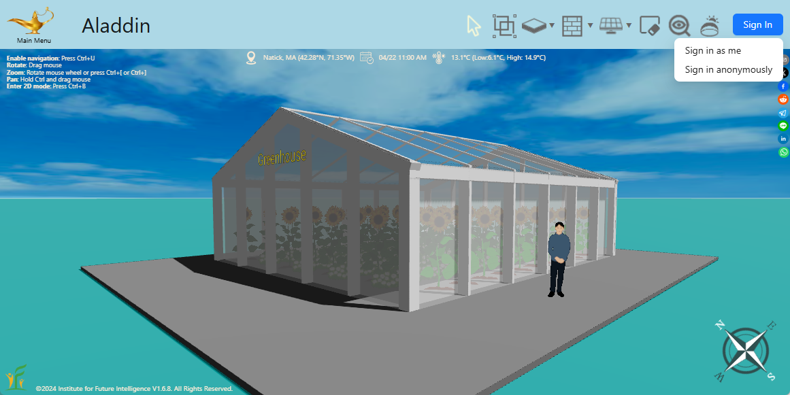
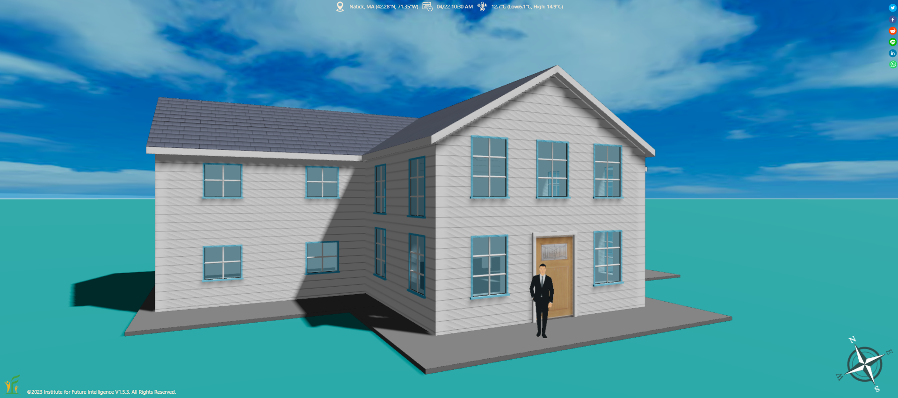
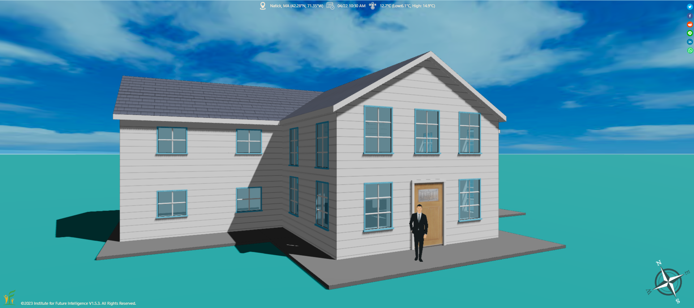
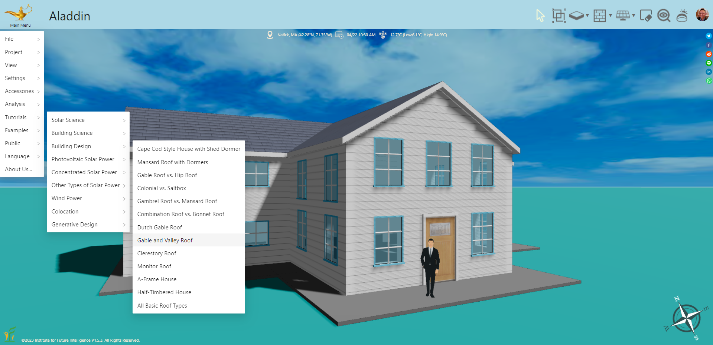
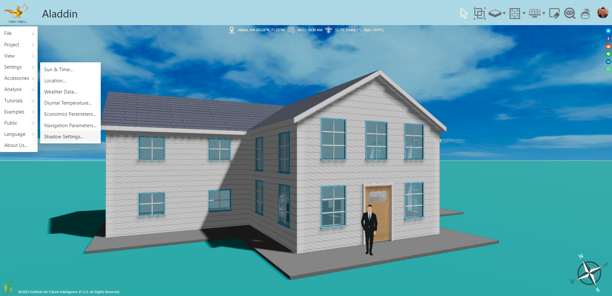
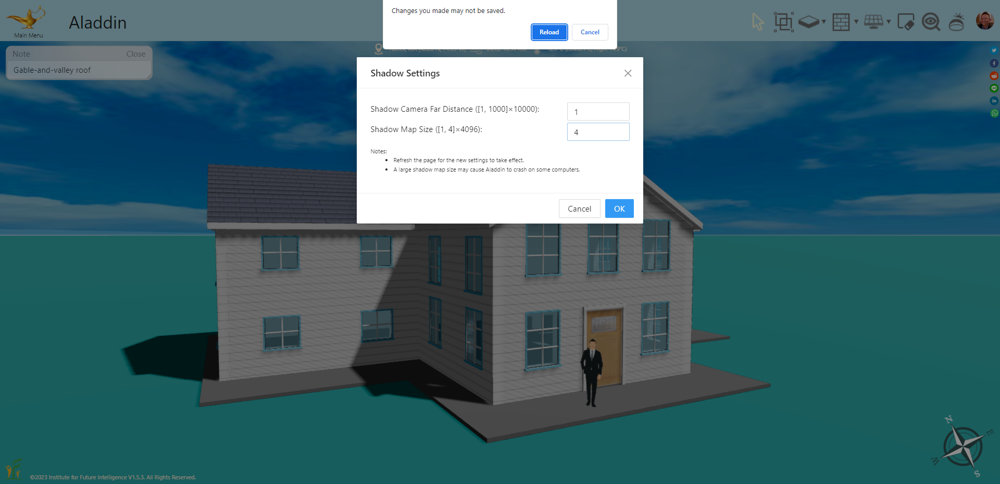

FAQ
Q: What can I do if the Sign In button does not work?
A: Aladdin relies on a common method called OAuth to create an account for you to access its cloud functionalities, such as storing your files on the cloud. This "Sign in as me" method is the preferred way to create an account in Aladdin if you plan to work with Aladdin in the long term. Chances are that your network administrator may have blocked you from using Sign in with Google, which uses OAuth. You should contact your administrator to unblock this for Aladdin.
Alternatively, you can use "Sign in anonymously" to create a temporary anonymous account in Aladdin (that option is available in the popup menu as shown in the screenshot below). Note that such a temporary account will be lost if you sign out from it. Keep in mind that, every time you sign in anonymously, a new temporary account will be created. So you will not be able to access the files that you have stored in the previous temporary account.

Q: What causes Aladdin to run slowly on Firefox?
A: This is likely due to the fact that Firefox sometimes experiences poor 3D graphics performance, which can be caused by a few factors such as hardware acceleration settings, GPU compatibility, and even driver issues. We recommend using Chrome or Edge to run Aladdin.
Q: There are some strange stripes on the surfaces of objects. What can I do to get rid of them?
A: By default, your model may show up like this:

This is obviously undesirable. But in order for Aladdin to work on most computers, we are forced to choose a default setting that does not demand too much GPU memory. The good news is that there is a way to improve the rendering quality (as shown below for the same model) on those computers that have sufficient resources.

To test if your computer is up for this rendering quality, please follow these steps:
1. Select "Main Menu > Tutorials > Building Design > Gable and Valley Roof" to open a test model:

As shown in the image above, you should see strange stripes in the textures of the walls of the house.
2. Select "Main Menu > Settings > Shadow Settings" to open the Shadow Settings:

3. After the Shadow Settings dialog window opens, increase the Shadow Map Size to 4 and then follow the instruction to reload the page.

If Aladdin works normally and you see improved rendering quality, you are all set. If Aladdin no longer works, read on.
4. If Aladdin fails after you increase the Shadow Map Size to 4, this means your computer is unable to render high-quality shadow. In this case, you have to revert the change to get Aladdin back to work. But since the setting has been saved in the local storage of your browser, you have to clear that first. The easiest way to do this is to clear the browser cache. Once you clear the cache, reopening Aladdin will set it back to the default state (with a man standing on a foundation). You can then continue to use Aladdin (with low-quality shadow).